I am a website developer and graphics designer. I started my programming journey right from my secondary school days, back then i learnt c++ to enable me participate in competitive programming competitions like the international informatics olympiad where i went on to acquire a gold medal in the states section of the competition. I am a three time computer whiz award winner from Bofoat Model International College and a holder of Talent Discovery Certificate from Bright Champs and so many others. Having been in the field for more than 3+ years you can trust me to deliver just what you need. I have a passion for learning and I am always eager to learn new things. Thanks for your time.
Here are some my projects
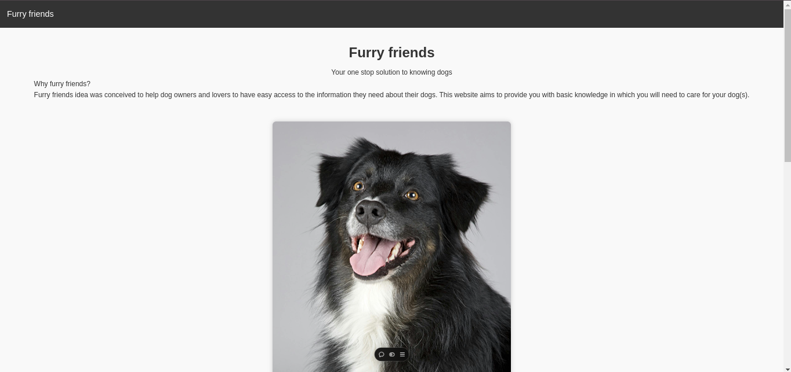
This is a project dedicated to dog lovers. Check it out
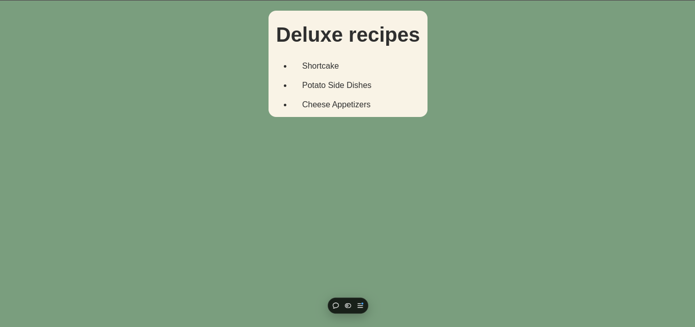
This is a page for simple recipes. Check it out
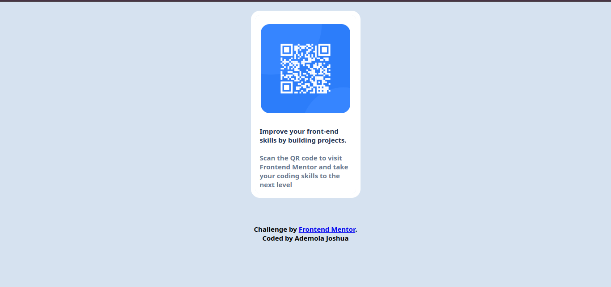
This is the model for a qr-code holder. Check it out
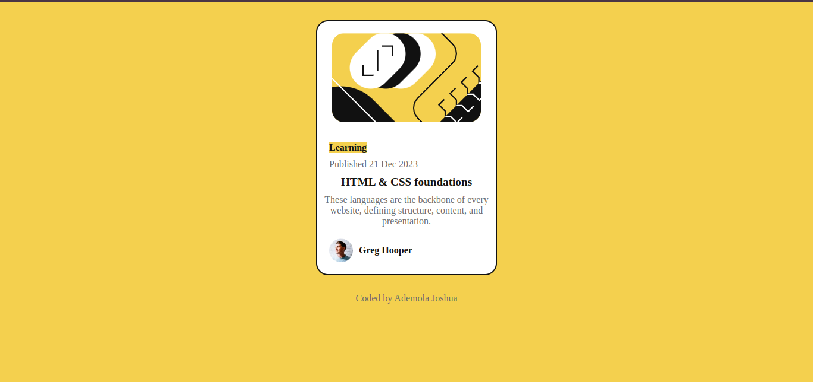
This is a template for a blog review card. Check it out
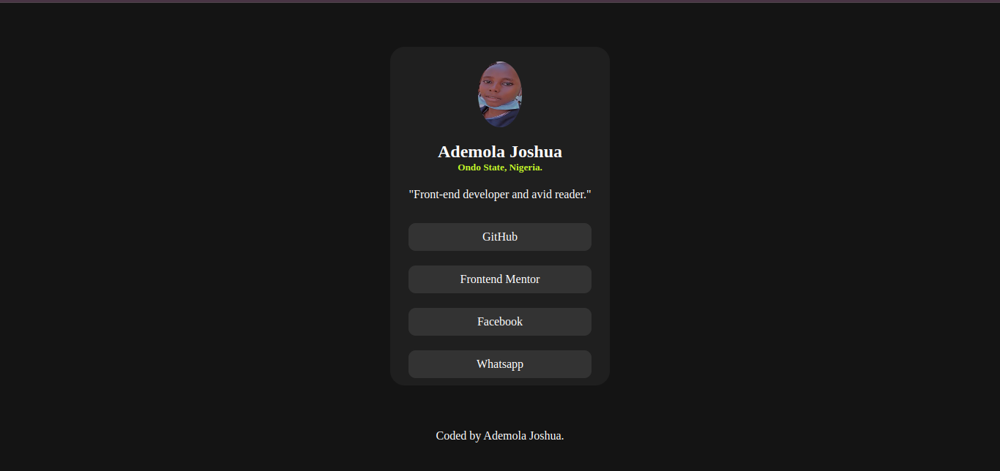
This is a page containing a reference link to all my social handles. Check it out
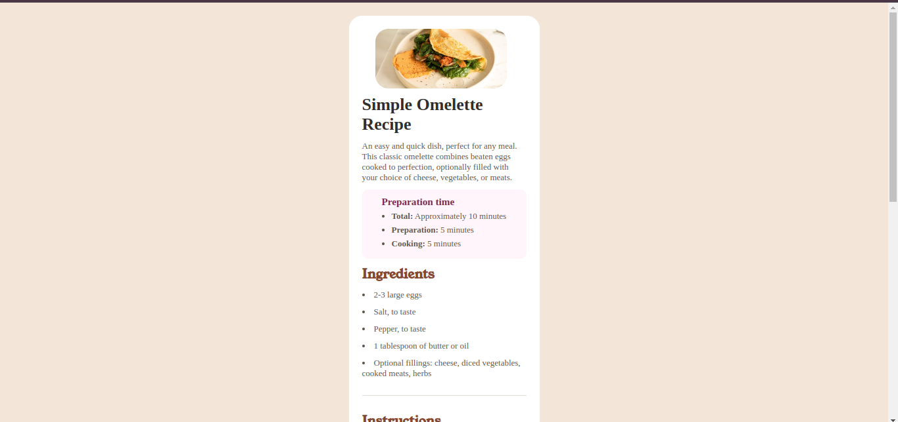
This is a page for a simple omelette. Check it out
Here are some my awards
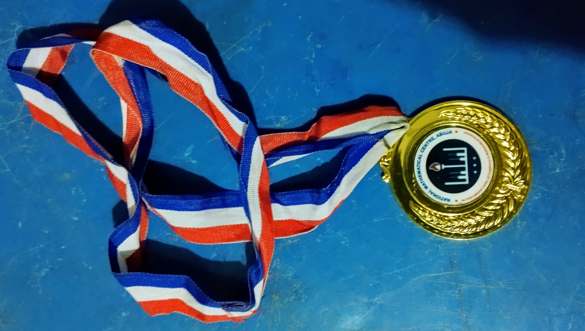
My Gold medal from the N.M.C Nigeria under accordance with International Informatics olympiad
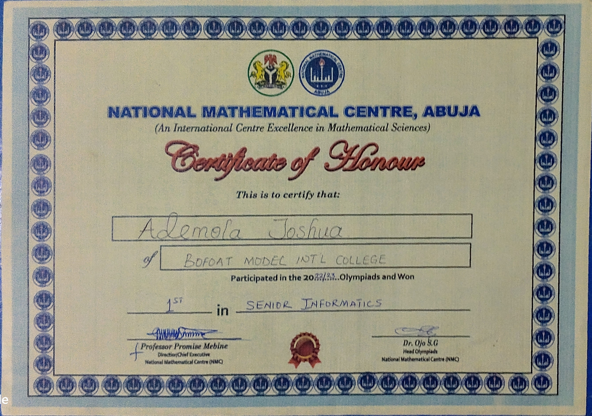
A Certificate of Honour from the N.M.C
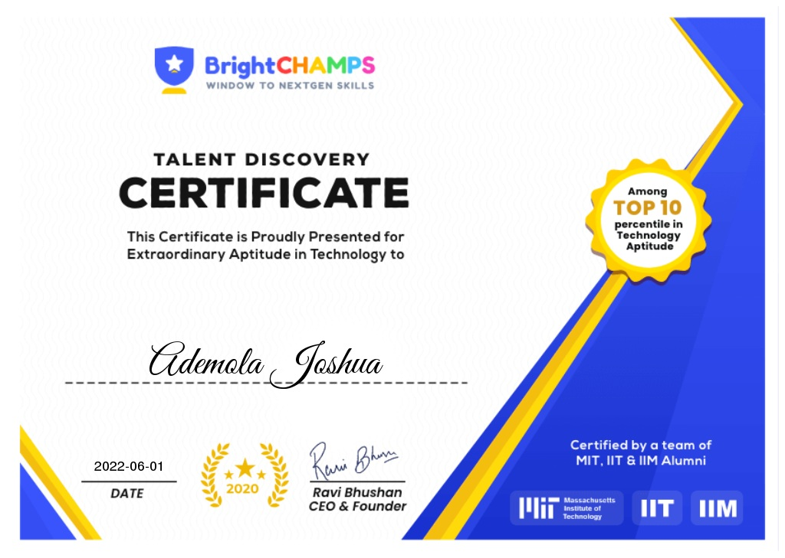
An Award of recognition from Bright Champs
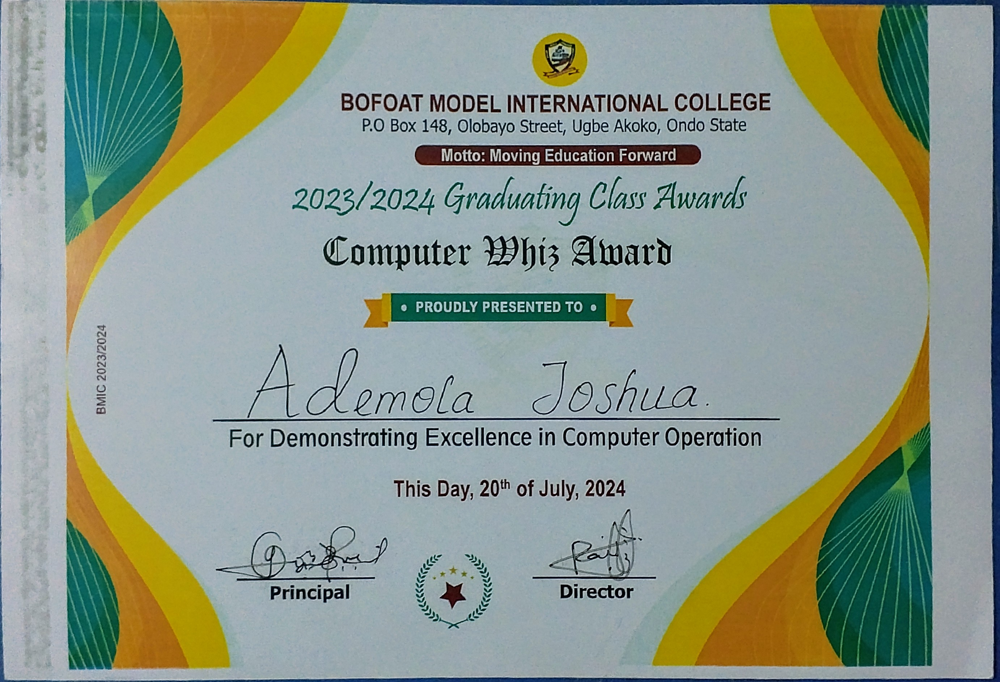
An award for demonstrating excellence in computer operation
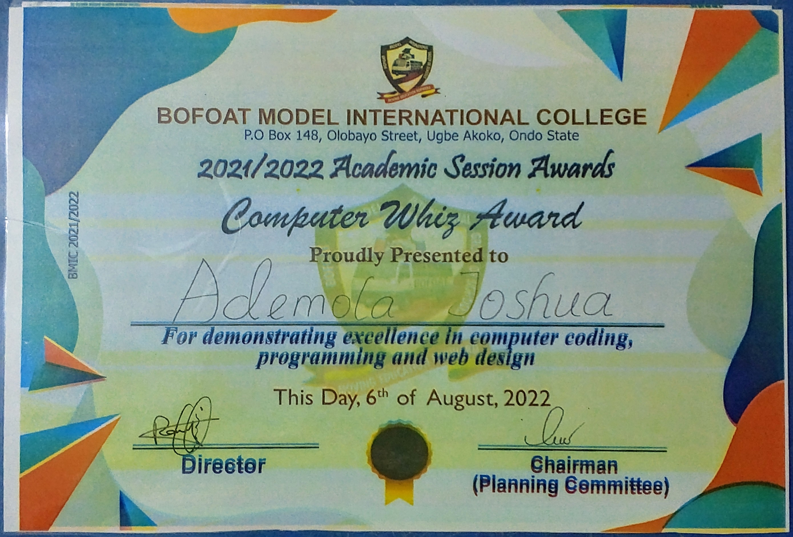
An award for demonstrating excellence in computer operation
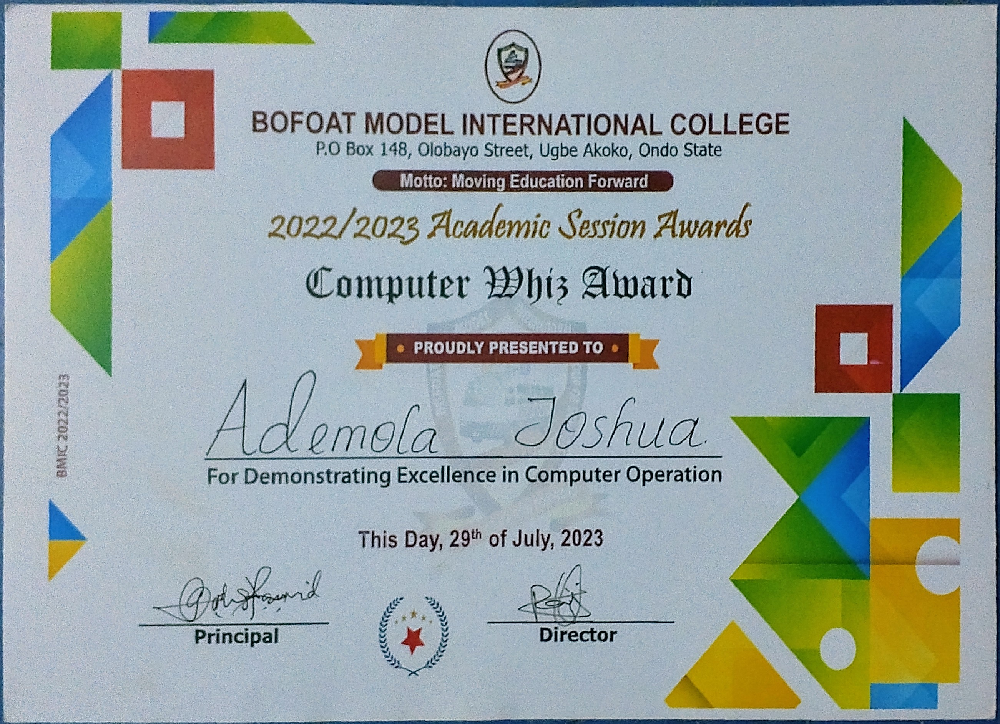
An award for demonstrating excellence in computer operation